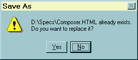
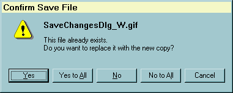
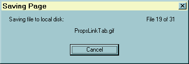
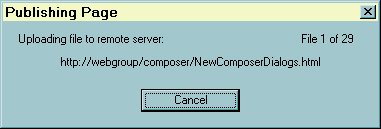

You are currently viewing a snapshot of www.mozilla.org taken on April 21, 2008. Most of this content is
highly out of date (some pages haven't been updated since the project began in 1998) and exists for historical purposes only. If
there are any pages on this archive site that you think should be added back to www.mozilla.org, please file a bug.
Skip to main content
File Saving Dialogs
1. Save Changes
Invoke
The current document is not a new document (it is a remote
or local file URL) that has been changed and the user attempts to:
-
Exit the app: File | Exit or during shut down of the computer
-
Close the Composer window: File | Close or the OS-specific close window
button
-
Preview page in Browser: File | Browse Page or the Preview toolbar button
-
Edit page in an external editor: Edit | HTML Source
Initialization
The current URL is inserted as the second line of the message.
Actions
Current behavior:
| Click Button |
Response |
| Yes |
Save the file to a local disk then continue with original requested
action. If the original location is a remote URL, then this brings up the
OS-specific "Save As" dialog so user can enter a local filename and select
the folder to place a local copy of the document.
If the file already existed on a local disk, this will cause the
Note: If original location is remote URL, this action is not necessarily
what the user wants. See suggested changes below. |
| No |
Don't save the file and continue with the requested action.
Note: This could cause some problems if editing with an external editor
-- see the Select Edit Changes Dialog |
| Cancel |
Don't save the file and don't continue with the requested action. |
Enhancements
-
The current implementation uses the generic "FE_Alert" mechanism, which
always uses the application name (such as the "Mozilla" shown above) as
the dialog caption. We suggest enhancing this so a custom caption string
can be used, such as "Save Changes," or implement this as a custom dialog
so we can use that string as the dialog caption.
-
Suggested change in buttons when the document being edited is a remote
URL (this might be best implemented as a separate dialog):
| Click Button |
Response |
| Save locally... |
Bring up the "Save As" dialog to save the file to a local disk then
continue with original requested action (same as current "Yes" action) |
| Publish... |
Bring up the Publish dialog so user can publish back to the original
location |
| Don't save |
Same as the current "No" action |
| Cancel |
Same as the current "Cancel" action |
2. Save New
Page
Invoke
The user has created and edited a new document and then tries
to:
-
Preview page in Browser: File | Browse Page or the Preview toolbar button
-
Edit page in an external editor: Edit | HTML Source:
Initialization
Nothing special
Actions
| Click Button |
Response |
| Save... |
Terminate this dialog and bring up OS-specific "Save As" dialog to
let user save locally, then continue with Preview or Edit page action. |
| Publish... |
Terminate this dialog and bring up the Publishing Dialog.
This does not continue with the Preview or Edit page action
(although that would be a good thing to do!) |
| Cancel |
Cancel saving the document and don't continue with the Preview or Edit
page action. |
3. Confirm
Save File
| Windows: |
Mac: |
UNIX: |
A. The following version is built into the OS:

B. This version is used when saving an HTML page
including images:
 |
|
|
|
|
|
Invoke
During file saving on a local disk if the file already exists:
File | Save As. Note: File | Save or the toolbar Save button will also
invoke the "Save As" dialog if the page is a new document that hasn't been
saved or published before.
-
Version A occurs when user is currently in the built-in, OS-specific
"Save As" dialog and tries to save to a file that already exists.
-
Version B occurs when we are saving an HTML file that has images
and the "Keep images with page" preference (Edit | Preferences | Composer
| Publishing) is checked. Thus we are copying image files to a destination
where file(s) with the same name already exist. It is invoked separately
for each existing image filename encountered, unless user selects "Yes
to All" or "No to All" during the file saving process.
Initialization
Current filename is inserted as the first line of text in the
dialog. (Current version uses bold text, but we may not want to do that
in the new version.)
Actions
| Click Button |
Response |
| Yes |
Overwrite existing file with the same name |
| Yes to All |
Overwrite this file and all others that may already exist at the destination
location (Version B only) |
| No |
Version A: Simply put the user back in the "Save As" dialog
so user can type or select a different filename
Version B: Don't overwrite existing file and continue checking
other files. |
| No to All |
Don't overwrite this file or any others that may already exist.
(Version B only) |
| Cancel |
Stop saving this and all other image files (Version B
only) |
4. Saving
/ Publishing Page
| Windows: |
Mac: |
UNIX: |
|  |
|
|
Invoke
During the copying of files during saving or publishing: Create the dialog
at the beginning of the file save or publish process.
This is a technically a non-modal dialog, in that it is created at the
beginning of saving, then updated as saving progresses, then it is destroyed
automatically when saving is finished.
The user is not allowed to interact with the document while files are being
saved, so to the user the dialog appears to be modal.
Initialization
-
Set the dialog caption and message appropriate to usage: Saving to local
disk or Publishing.
-
When dialog is created, pass in the URL of the HTML file being copied and
the total number of files being copied (1 for the HTML file + number of
images in the document.) Display this URL in the center of the dialog and
format the file-count message in the upper right corner to show: "File
1 of x", where x is total number of files.
-
Dialog Rules
-
For each image copied, notify the the dialog so the URL of the image and
the "File y of x" text can be updated to show which file is being copied.
-
After the last file is copied, destroy the dialog automatically and remove
suppression of user interaction.
Actions
| Click Button |
Response |
| Cancel |
Abort the saving/publishing process. All files already copied are not
affected. |
|
|
5. Page Title
Invoke
After user selects a filename to save a file to local disk,
but only if the current document does not have a title (usually only after
saving a new document.)
Initialization
-
Get the filename from the document's URL (strip out all host and directory
prefix, and file extension after the name.) Use the filename as the initial
value of the page title editbox.
-
All other strings in the dialog are static.
Actions
Click Button
User Action |
Response |
| OK |
Set the document data to the user-enterred title. Also update other
places where the title is used, such as on the window caption bar.
Continue saving the file |
| Cancel |
Continue saving the file with an empty title (no TITLE tag should be
written).
Do no use a Cancel button at all if we want to force a title. |
Enhancements
According the the HTML
4.0 specification, "Every HTML document must have a TITLE element in
the HEAD section."
It is certainly a good idea and we should strongly encourage users
to at least accept the default filename supplied by this dialog. If we
want to require the user to enter a title, then we should:
-
Disable the OK button if the editbox is empty
-
Eliminate the Cancel button since the user cannot cancel the action.